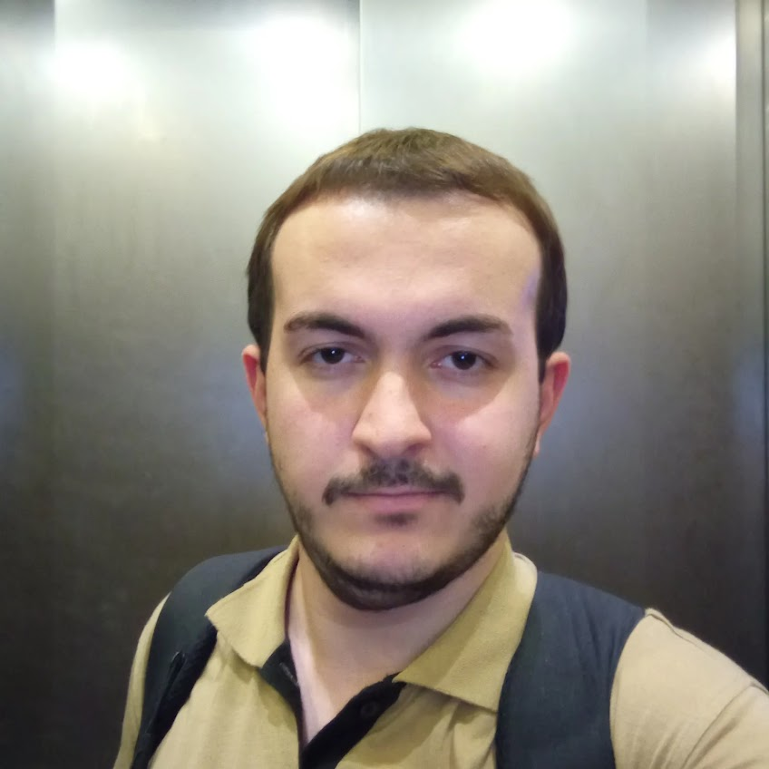

Ege Üniversitesi Bilgisayar ve Öğretim Teknolojileri Öğretmenliği bölümündeki akademik altyapımı, sahadaki zengin deneyimlerimle birleştiriyorum. Teknolojiyi sadece tüketen değil, üreten bir nesil yetiştirmek için yola çıktım.
Kariyerim boyunca Pinoo Education ve Atölye Vizyon gibi prestijli kurumlarda içerik geliştirme ve eğitmenlik rollerini üstlendim. Robotik kitlerden blok tabanlı programlamaya, yapay zekadan fen bilimlerine kadar geniş bir yelpazede eğitim içerikleri üretiyorum.
Eğitimde fırsat eşitliği ilkesiyle, ortaokul seviyesindeki öğrencilere fen bilimleri derslerinde destek oldum ve gönüllü eğitmenlik süreçlerini yürüttüm.
Geleceğin yazılımcılarını yetiştirmek adına lise düzeyinde bilgisayar bilimi ve temel yazılım prensipleri üzerine eğitimler verdim.